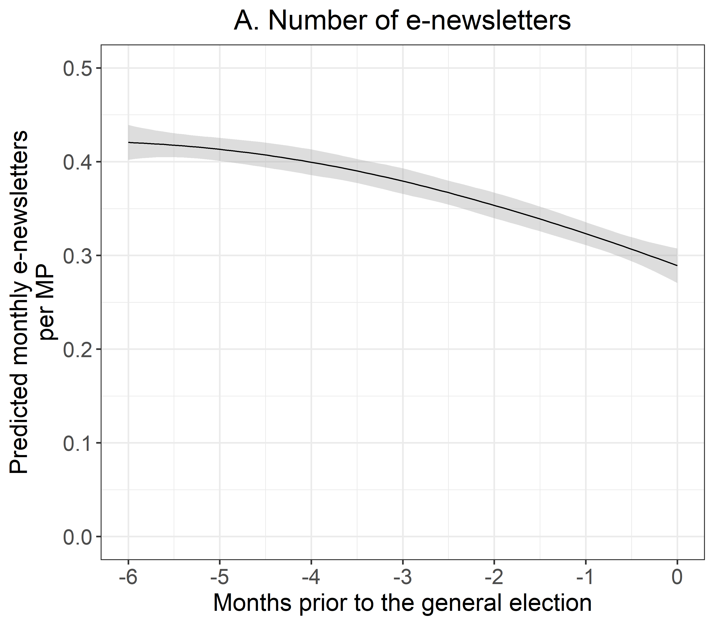
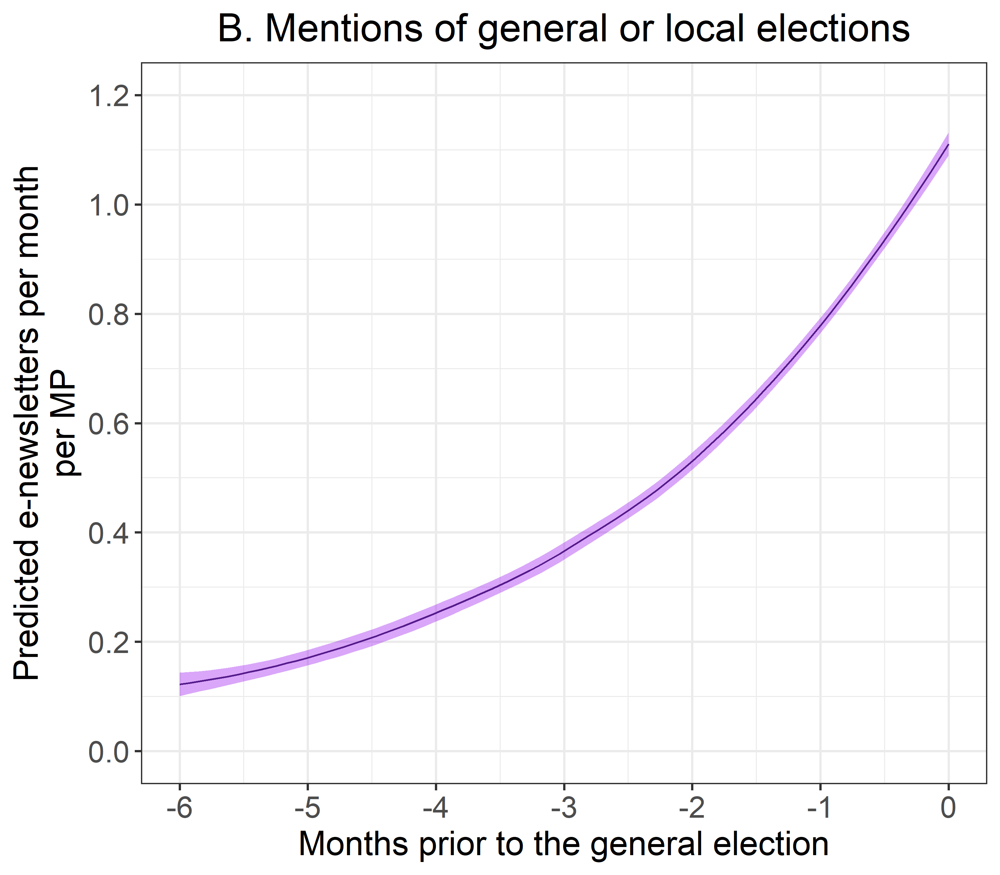
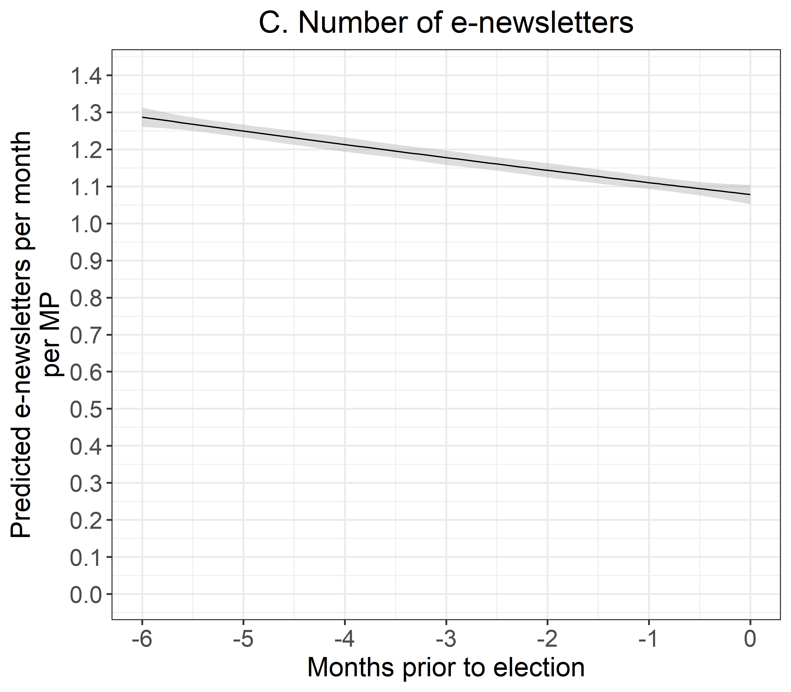
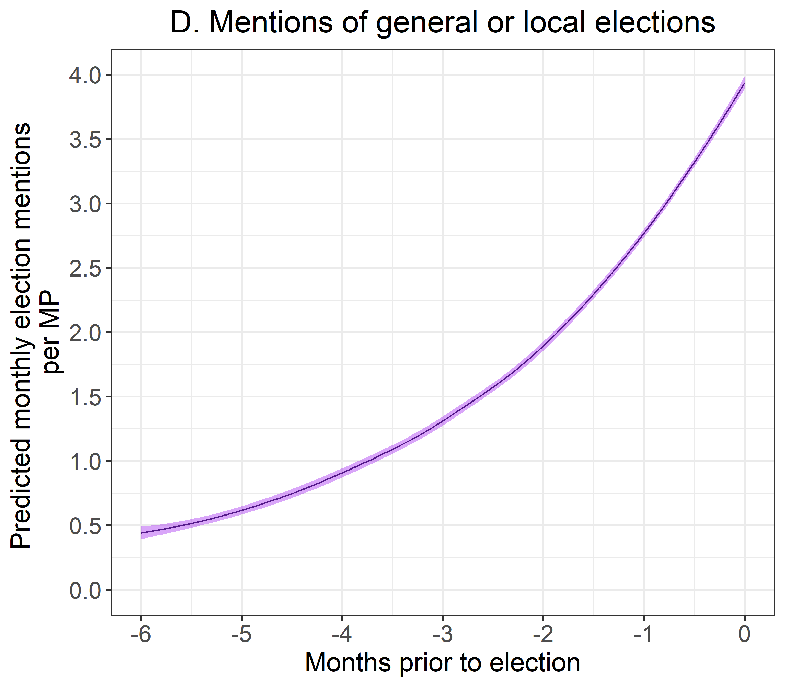
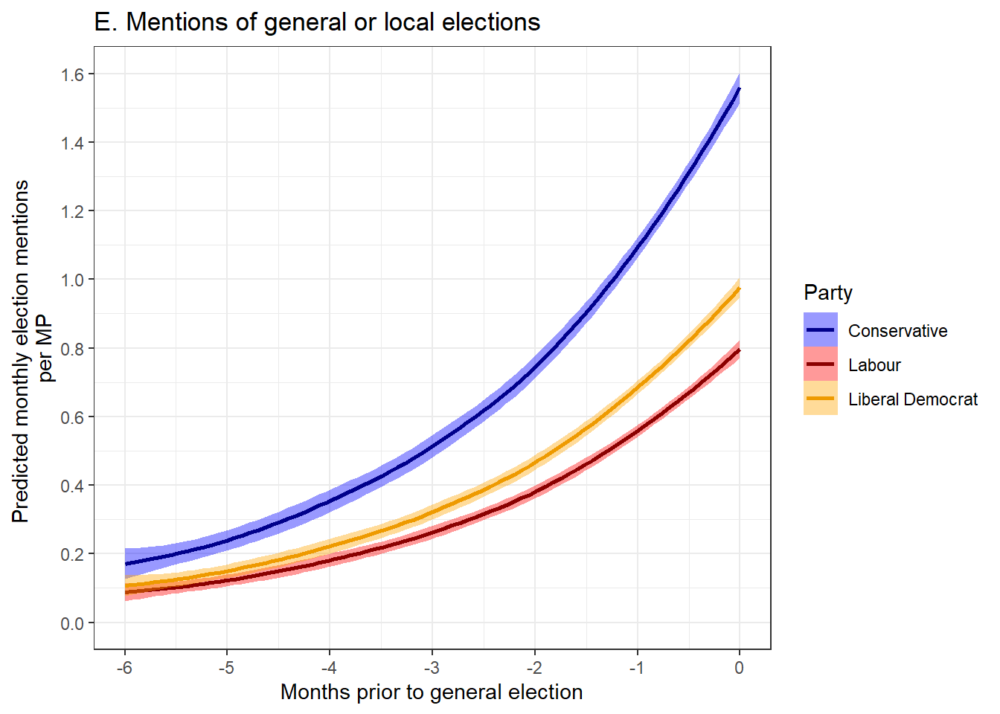
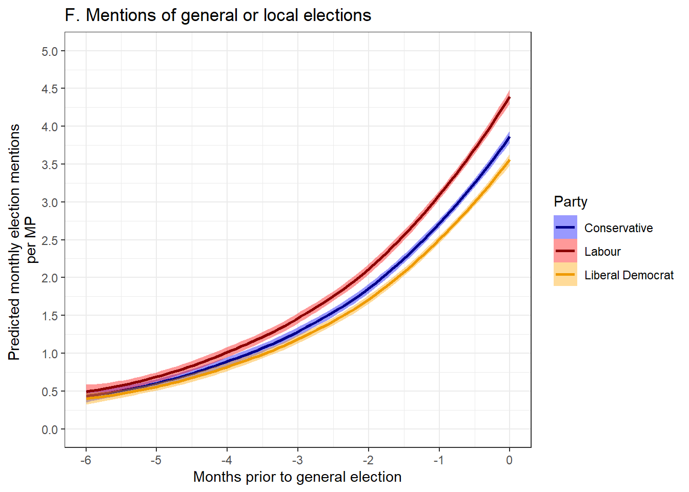
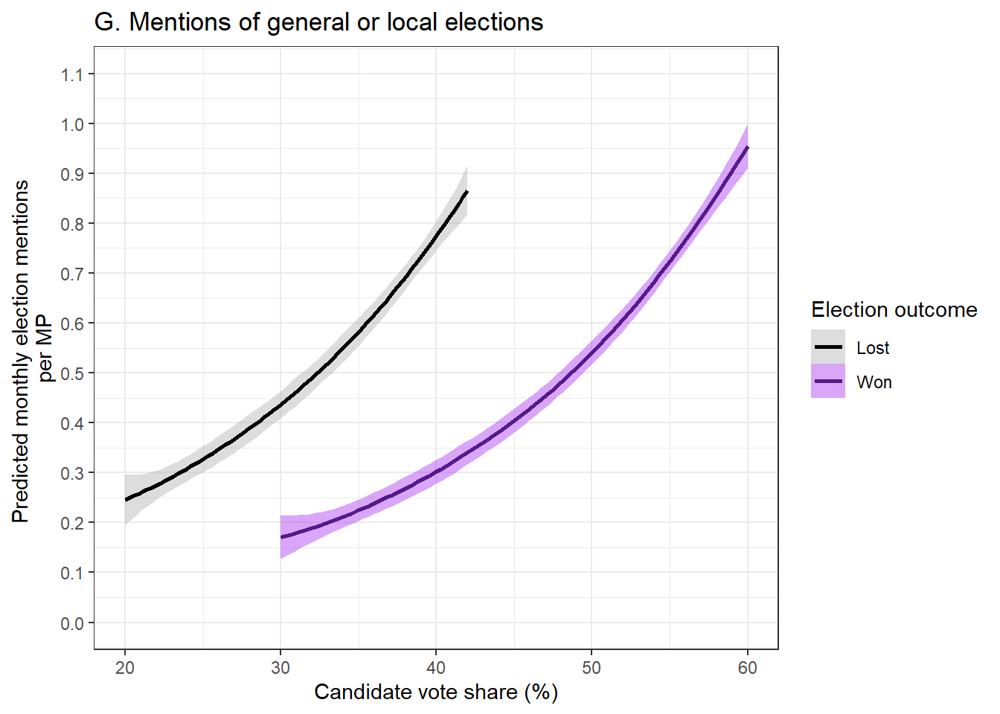
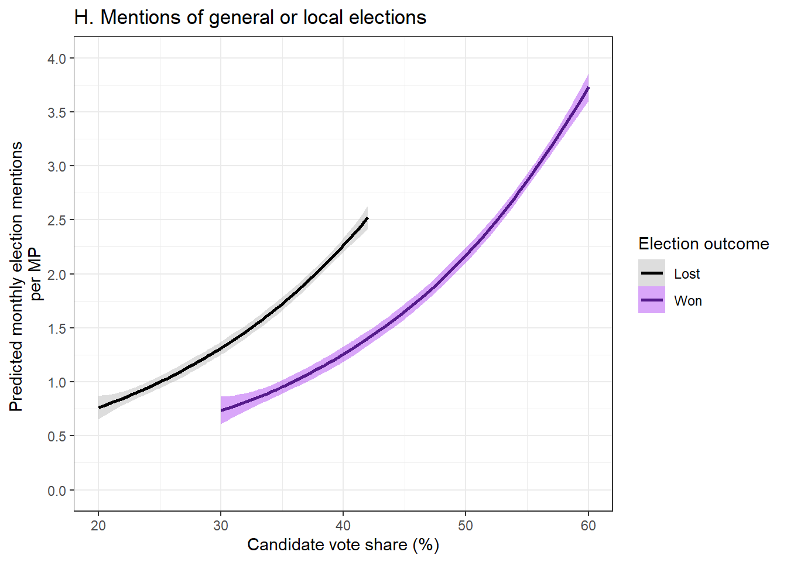

Elections Are for Winners! MP Inbox Trends, Part 1
If I were a MP, I would simply win re-election. Hope that helps!
politics
data science
UK MP Inbox
2024 UK general election
Author
Adam L. Ozer
Published
January 26, 2026
Disclaimer: Any statements or opinions expressed in this blog are shared in a personal capacity. They do not reflect the official stances or policies of Verian.
# import packagessuppressPackageStartupMessages({library(ggplot2)library(dplyr)library(readr)library(pscl)library(MASS)})# load datamonthly_all <- readr::read_rds( here::here("blog","posts","2026-01-26-elections-are-for-winners","data","monthly_counts_all.rds" ) )monthly_cool_kids <- readr::read_rds( here::here("blog","posts","2026-01-26-elections-are-for-winners","data","monthly_counts_cool_kids.rds" ) )monthly_all <-subset(monthly_all, main_party_name !="Scottish National Party")monthly_cool_kids <-subset(monthly_cool_kids, main_party_name !="Scottish National Party")# Newsletters ZINB model (All MPs)news_count_month <-zeroinfl(newsletter_count ~ months_prior + candidate_vote_share_perc + won_election + main_party_name + tenure_years,data=monthly_all, dist ="negbin")# Newsletter NB model (Only MPs with active e-newsletter)news_count_cool_month <-glm.nb(newsletter_count ~ months_prior + candidate_vote_share_perc +as.factor(won_election) + main_party_name + tenure_years,data=monthly_cool_kids)# Election ZINB model (All MPs)elect_count_month <-zeroinfl(total_election_count ~ months_prior + candidate_vote_share_perc + won_election + main_party_name + tenure_years, data=monthly_all, dist ="negbin");summary(elect_count_month) # Election NB model (Only MPs with active e-newsletter)elect_count_cool_month <-glm.nb(total_election_count ~ months_prior + candidate_vote_share_perc +as.factor(won_election) + main_party_name + tenure_years,data=monthly_cool_kids);summary(elect_count_cool_month)# Create df for predictionsnewdata1 <-expand.grid(months_prior =seq(-6,0, by=1),won_election =factor(0:1),candidate_vote_share_perc =seq(20,60, by=1),main_party_name =factor(c("Conservative", "Labour", "Liberal Democrat")),tenure_years=seq(0,45, by=5))newdata1 <- newdata1 %>%filter(!(won_election ==0& candidate_vote_share_perc >42),!(won_election ==1& candidate_vote_share_perc <30))# generate predictionsnewdata1$phat_news_all <-predict(news_count_month, newdata1, type ="response")newdata1$phat_news_cool_kids <-predict(news_count_cool_month, newdata1, type ="response")newdata1$phat_elect_all <-predict(elect_count_month, newdata1, type ="response")newdata1$phat_elect_cool_kids <-predict(elect_count_cool_month, newdata1, type ="response")
Back in July, I wrote my first blog post publicising the UK MP Inbox. In it, I looked at some of the high level descriptive trends in MP e-newsletters, highlighted some interesting partisan patterns, and concluded by briefly discussing other topics I would like to explore with these data. Since then, however, I have yet to publish much about the MP Inbox publicly. In truth, I do use these data quite a bit at work for a variety of purposes. However, my day job doesn’t pay me to wax poetic to a handful of politics and public policy nerds on the internet.1 As a result, blogging has fallen down the priority list in recent months. I’m hoping I can change that a bit going forward.
I want this to be the first in a series of posts that I am calling MP Inbox Trends, a set of quick-and-dirty analyses using MP e-newsletter data to briefly explore whatever topics strike my fancy. I would love to do full on investigative academic-level deep dives, but it is hard to achieve that necessary level of perfectionism when you are very busy with a full time job.2 Thus, my plan is to start with some very basic approaches, potentially ramping up the complexity over time with analyses slowly building off one another. With any luck, doing so will allow me show off interesting trends and potential use cases for MP e-newsletter data. At the same time, it will hopefully keep these posts fun and interesting so that I am more motivated to keep writing (and hopefully you are entertained enough to keep reading).
With housekeeping now out of the way, let’s talk a little about electoral performance and e-newsletters in the 2024 UK general election.
Does electoral performance correlate with e-newsletter trends?
One may ask, “does the world really need another breathless post-mortem analysis of an election that happened almost two years ago?” To that I confidently and firmly say “no, probably not”. Yet, the 2024 general election provides an interesting lens through which to view MPs’ communication with their constituents. Also, let’s be honest, elections are inherently interesting and fun to talk about. So, armed with some candidate-level election results collected via the House of Commons Library, I set out to explore a simple question: “Did election winners write more about the 2024 general election than election losers?”
When thinking about how to conceptualise election-based conversation, I mulled over a few different approaches. Maybe I could manually hand code a subset of e-newsletters based on their election content? Maybe I could leverage an LLM to help with data cleaning and identifying election-oriented discussion? Maybe I could phone up a more qual-oriented colleague and take a different approach entirely? Ultimately, I chose to start with the most bare bones approach possible: a simple word search to count how many times MPs used the terms “election”, “general election”, or “local election”. Not exactly a groundbreaking nor innovative approach, but it is a simple and easy-to-implement starting point nonetheless.
While the approach was basic, I did find some rather interesting divergent behaviour among MPs based on their party and electoral performance. Electoral pressures, successes, and long-term incumbency do seem to impact MP communication, though the answer to my previous question about winners and losers may not be as black and white as I had initially thought.
Exploring the data
My analyses primarily leverage two sets of data. First, from the UK MP Inbox, I gathered all of the e-newsletters that were sent up to six months prior to the general election. Second, I combined these data with election data made available through the House of Commons Library, matching each MP’s e-newsletter output with their vote share in the general election. I then removed all MPs that retired or did not seek re-election as they did not have a vote share to assess.3 I also limited analyses to MPs from three of the largest political parties at the time (Conservative, Labour, Liberal Democrats). I excluded the Scottish National Party from analyses, as Scotland has stricter laws regarding elections and campaigning in newsletters. I excluded the smaller parties due to their very small sample sizes. The end result was a sample of 457 MPs and 2682 e-newsletters sent between 4 February and 4 July, 2024.
I focus analyses on two key dependent variables. The first is a count of the number of e-newsletters sent. The second is the number of times an e-newsletter uses any of the following phrases: “election”, “general election”, or “local election”. The latter of which was easy to calculate through a simple term search and basic addition.
I chose to model the data in two ways. First, to assess the full sample of MPs, I used a zero inflated negative binomial model to better account for the large number of MPs that did not have an active e-newsletter. The basic assumption here is that in order to discuss the election in their e-newsletter, an MP must choose to create an email newsletter service in the first place. This lead me to anticipate overdispersion.4 Second, to check for consistency, I subsetted the data to include only MPs with active e-newsletters and ran another set of more standard negative binomial models. Both sets of models yielded highly similar results. For all models, I generated predicted counts for both dependent variables, controlling for the number of months remaining until election day, the MP’s party, the MP’s vote share, and the number of years they spent in office.
Cometh the hour, cometh the e-newsletter?
If you are running for re-election, it is probably a good idea to remind your constituents about all the good things you have done so you can motivate them to vote. However, the pre-election period of sensitivity in the UK places communications restrictions on political campaigning in the weeks leading up to the election. E-newsletters fall into a strange grey area here. E-newsletters are technically not a tool for political campaigning so much as a means of keeping constituents informed and holding legislators accountable. However, one would have to be pretty naive to assume that MPs would not be tempted to sneak in a little election talk, you know, as a treat. Is that an issue? Technically, people have to willingly and purposely sign up for a newsletter service. So does an e-newsletter truly count as “unsolicited campaigning”? The discussion of ethics, purpose, and legality here is probably best left for another day. In the meantime, we can at least take a look at how often MPs discuss the election.
After plotting the predicted number of e-newsletters an MP sends per month over time (Figure A and Figure C), we see a small dip in the number of e-newsletters as election day approaches. This trend is likely partially driven by a number of MPs that chose to shift their attention to other matters right around the time parliament dissolved (30 May, 2024). While anecdotal, this trend is underscored the many MPs who used the opportunity to send wistful final farewells to their constituents.5
(NOTE: For each plot in this blog post, you can click the “All MPs” and “Only MPs with active e-newsletters” tabs to switch back and forth between the two samples)
# Plot AA <-ggplot(newdata1, aes(x = months_prior, y = phat_news_all)) +geom_smooth(method ="loess", se =TRUE, formula = y ~ x,colour="black", fill="darkgrey") +labs(x ="Months prior to the general election", y ="Predicted monthly e-newsletters\nper MP",colour ="Election outcome",title ="A. Number of e-newsletters") +scale_x_continuous(breaks =seq(-6, 0, by =1)) +scale_y_continuous(breaks =seq(0, .5, by = .1)) +coord_cartesian(xlim =c(-6, 0), ylim =c(0, .5)) +theme_bw(base_size =30) +theme(axis.text =element_text(size =rel(1.15)), axis.title =element_text(size =rel(1.3)), plot.title =element_text(size =rel(1.5), hjust =0.5)) # Plot BB <-ggplot(newdata1, aes(x = months_prior, y = phat_elect_all)) +geom_smooth(method ="loess", se =TRUE, formula = y ~ x,colour="purple4", fill="purple") +labs(x ="Months prior to the general election", y ="Predicted e-newsletters per month\nper MP",colour ="Election outcome",title ="B. Mentions of general or local elections") +scale_x_continuous(breaks =seq(-6, 0, by =1)) +scale_y_continuous(breaks =seq(0, 1.2, by = .2)) +coord_cartesian(xlim =c(-6, 0), ylim =c(0, 1.2)) +theme_bw(base_size =30) +theme(axis.text =element_text(size =rel(1.15)), axis.title =element_text(size =rel(1.3)), plot.title =element_text(size =rel(1.5), hjust =0.5)) AB


Plot Code (Click to Expand)
C <-ggplot(newdata1, aes(x = months_prior, y = phat_news_cool_kids)) +#geom_point() +#geom_line() +geom_smooth(method ="loess", se =TRUE, formula = y ~ x,colour="black", fill="darkgrey") +#facet_wrap(~ camper) +labs(x ="Months prior to election", y ="Predicted e-newsletters per month\nper MP",colour ="Election outcome",title ="C. Number of e-newsletters") +scale_x_continuous(breaks =seq(-6, 0, by =1) ) +scale_y_continuous(breaks =seq(0, 1.4, by = .1) ) +coord_cartesian(xlim =c(-6, 0), ylim =c(0, 1.4)) +theme_bw(base_size =30) +theme(axis.text =element_text(size =rel(1.15)), axis.title =element_text(size =rel(1.3)), plot.title =element_text(size =rel(1.5), hjust =0.5)) D <-ggplot(newdata1, aes(x = months_prior, y = phat_elect_cool_kids)) +#geom_point() +#geom_line() +geom_smooth(method ="loess", se =TRUE, formula = y ~ x,colour="purple4", fill="purple") +#facet_wrap(~ camper) +labs(x ="Months prior to election", y ="Predicted monthly election mentions \nper MP",colour ="Election outcome",title ="D. Mentions of general or local elections") +scale_x_continuous(breaks =seq(-6, 0, by =1) ) +scale_y_continuous(breaks =seq(0, 4, by = .5) ) +coord_cartesian(xlim =c(-6, 0), ylim =c(0, 4)) +theme_bw(base_size =30) +theme(axis.text =element_text(size =rel(1.15)), axis.title =element_text(size =rel(1.3)), plot.title =element_text(size =rel(1.5), hjust =0.5)) CD


While MPs sent fewer e-newsletters as election day approached, they were certainly not shy about discussing the election, especially within the period of sensitivity. Predicted mentions of the election rose exponentially over time (Figure B and Figure D). Among just those with active e-newsletter, MPs were predicted to reference the election at least three times in the final month prior to election day. This number likely would have been even higher were the search criteria expanded to include mentions of campaigning or references to Get Out The Vote (GOTV) campaigns. A quick skim of email subject lines shows us that MPs were not above using their e-newsletters for a cheeky bit of campaigning. While it is not my intention to pick on any particular MPs, here are just a few examples picked haphazardly to illustrate the point:6
“My final plea: Put Shropshire first as you vote today”, sent by Helen Morgan on 4 July, 2024
“A final pitch [ballot box emoji]”, sent by Caroline Ansell on 3 July, 2024
“Reynold’s Round Up - One Week To Go”, sent by Jonathan Reynold on 28 June, 2024
“Only Greg Hands lives in Chelsea & Fulham”, sent by Greg Hands on 28 June, 2024
As we break these trends down by political party, we see that most of the larger parties mentioned the election with increasing frequency as it approached. Among the full sample of MPs (Figure E), Conservative MPs exhibit the largest increase in election discussion over time, mentioning the election over 1.5 times on average in the final month of the election cycle. Liberal Democrat and Labour MPs exhibit similar, but smaller trends in increased election discussion over time. Yet, if we limit analyses to only MPs with active e-newsletters (Figure F), this gap between Conservatives, Labour, and Liberal Democrats more or less dissipates. By the time we hit June of 2024, MPs with active e-newsletters from all three parties are referencing the election roughly 3.5 to 4.5 times per month on average.
ggplot(newdata1, aes(x = months_prior, y = phat_elect_all, colour = main_party_name, fill = main_party_name)) +#geom_point() +#geom_line() +geom_smooth(method ="loess", se =TRUE, formula = y ~ x) +#facet_wrap(~ main_party_name) +labs(x ="Months prior to general election", y ="Predicted monthly election mentions \nper MP",colour ="Party",fill ="Party",title ="E. Mentions of general or local elections") +scale_colour_manual(values =c("Conservative"="blue4", "Labour"="red4", "Liberal Democrat"="orange2")) +scale_fill_manual(values =c("Conservative"="blue", "Labour"="red", "Liberal Democrat"="orange")) +scale_x_continuous(breaks =seq(-6, 0, by =1) ) +scale_y_continuous(breaks =seq(0, 1.6, by = .2) ) +coord_cartesian(xlim =c(-6, 0), ylim =c(0, 1.6)) +theme(axis.text =element_text(size =14), axis.title =element_text(size =17), plot.title =element_text(size =18, hjust =0.5),legend.text =element_text(size =16),legend.title =element_text(size =18) ) +theme_bw()

Plot Code (Click to Expand)
ggplot(newdata1, aes(x = months_prior, y = phat_elect_cool_kids, colour = main_party_name, fill = main_party_name)) +#geom_point() +#geom_line() +geom_smooth(method ="loess", se =TRUE, formula = y ~ x) +#facet_wrap(~ main_party_name) +labs(x ="Months prior to general election", y ="Predicted monthly election mentions \nper MP",colour ="Party",fill ="Party",title ="F. Mentions of general or local elections") +scale_colour_manual(values =c("Conservative"="blue4", "Labour"="red4", "Liberal Democrat"="orange2")) +scale_fill_manual(values =c("Conservative"="blue", "Labour"="red", "Liberal Democrat"="orange")) +scale_x_continuous(breaks =seq(-6, 0, by =1) ) +scale_y_continuous(breaks =seq(0, 5, by = .5) ) +coord_cartesian(xlim =c(-6, 0), ylim =c(0, 5)) +theme(axis.text =element_text(size =14), axis.title =element_text(size =17), plot.title =element_text(size =18, hjust =0.5),legend.text =element_text(size =16),legend.title =element_text(size =18) ) +theme_bw()

So what does one make of these findings? A likely driving factor is the fact that Conservative MPs generally write far more e-newsletters than their Labour or Liberal Democrat counterparts. This underscores a key assumption behind my choice to use zero-inflated modelling: since the average Conservative MP is more likely to have a e-newsletter in the first place, the Conservatives simply have more opportunities to discuss the election (or any topic really) in those e-newsletters. Yet, if we account for this, we see that the incentives surrounding election-related discussion do not appear to be especially unique to Conservatives. Among most MPs, the election simply becomes an increasingly salient point of discussion over time, irrespective of party.
E-newsletters are for winners (sort of)!
Let’s briefly imagine a scenario: You are an MP running for re-election and you are anticipated to win quite comfortably. Election day is approaching as you sit down to draft your regular newsletter to constituents. Should you write about the upcoming election? Perhaps you feel it’s necessary to keep up your good momentum, and your large lead in the polls might you the flexibility to talk about hot button issues and policies that your peers in tight races might avoid. Yet, perhaps your instincts tell you it’s smart to keep the election chat to a minimum and stay away from anything contentious. Maybe a polite generic reminder before election day is wise, but overall, perhaps you shouldn’t try and fix things if they aren’t broken.
Now let’s flip the scenario: imagine you are an MP running for re-election, but your electoral forecast is looking grim. You sit down to draft your regular newsletter and arrive at the same question: Should you write about the upcoming election? On one hand, maybe you feel like you have nothing to lose, so why not throw a good deal of campaign messaging into your e-newsletter? On the other hand, you are already devoting most of your attention to true campaign activities at this point (e.g. attending in-person events, doing media appearances). Maybe the e-newsletter is just an afterthought and a waste of energy at this point.
I bring up these scenarios to provide a (somewhat overly simplistic) contextual frame for discussion. This blog post represents a very casual analysis and it does not lend itself to properly asserting any formal causality (or disentangling endogeniety). Still, I personally found these competing sets of logic to be plausible and a decent starting point to guide my thinking. So, do MPs in safe consistencies use their e-newsletters to flex their electoral muscle more often? Or do struggling MPs drive the electoral chatter, desperately pushing to turn their fortunes around?
### All candidates (ZINB model) ###ggplot(newdata1, aes(x = candidate_vote_share_perc, y = phat_elect_all, colour=factor(won_election), fill =factor(won_election))) +#geom_point() +#geom_line() +geom_smooth(method ="loess", se =TRUE, formula = y ~ x) +#facet_wrap(~ camper) +labs(x ="Candidate vote share (%)", y ="Predicted monthly election mentions \nper MP",colour ="Election outcome", # Legend title for colourfill ="Election outcome",title ="G. Mentions of general or local elections") +# Legend title for fillscale_colour_manual(values =c("0"="black", "1"="purple4"),labels =c("Lost", "Won")) +scale_fill_manual(values =c("0"="darkgrey", "1"="purple"),labels =c("Lost", "Won")) +#scale_x_continuous(# breaks = seq(20, 60, by = 10)#) + scale_y_continuous(breaks =seq(0, 1.1, by = .1) ) +coord_cartesian(xlim =c(20, 60), ylim =c(0, 1.1)) +theme(axis.text =element_text(size =14), axis.title =element_text(size =17), plot.title =element_text(size =18, hjust =0.5),legend.text =element_text(size =16),legend.title =element_text(size =18) ) +theme_bw()

Plot Code (Click to Expand)
ggplot(newdata1, aes(x = candidate_vote_share_perc, y = phat_elect_cool_kids, colour =factor(won_election), fill =factor(won_election))) +#geom_point() +#geom_line() +geom_smooth(method ="loess", se =TRUE, formula = y ~ x) +#facet_wrap(~ camper) +labs(x ="Candidate vote share (%)", y ="Predicted monthly election mentions \nper MP",colour ="Election outcome", # Legend title for colourfill ="Election outcome",title ="H. Mentions of general or local elections") +# Legend title for fillscale_colour_manual(values =c("0"="black", "1"="purple4"),labels =c("Lost", "Won")) +scale_fill_manual(values =c("0"="darkgrey", "1"="purple"),labels =c("Lost", "Won")) +#scale_x_continuous(# breaks = seq(20, 60, by = 10)#) + scale_y_continuous(breaks =seq(0, 4, by = .5) ) +coord_cartesian(xlim =c(20, 60), ylim =c(0, 4)) +theme(axis.text =element_text(size =14), axis.title =element_text(size =17), plot.title =element_text(size =18, hjust =0.5),legend.text =element_text(size =16),legend.title =element_text(size =18) ) +theme_bw()

As it turns out, electoral success does correlate with election mentions in e-newsletters, but a simple winners versus losers frame may not capture the full story. The data show that MPs with stronger electoral performances in terms of vote share tend to mention the election more often in their e-newsletters. However, this pattern is not limited to those who won their re-election bid. Irrespective of whether the MP ulimately won or lost their race, a larger vote share correlates with more election-related discussion. This held true across the full sample of MPs (Figure G) and among MPs with active e-newsletters (Figure H). Thus, it would seem that more popular MPs drove election-related discussion in e-newsletters, even if the end result may not have gone their way.
What does one make of this? In truth, there are a variety of factors, both strategic and environmental, that could influence the relationship between electoral performance and election mentions. Moreover, it’s impossible to know what types of discussions are being had in each MP’s office, even if we were to assume that election content in e-newsletters is guided by communication strategy. Nonetheless, it is fun to engage in a cheeky bit of conjecture and again imagine some plausible considerations that MPs may have.
The audience of an MP’s newsletter is likely to be highly composed of their most politically engaged supporters. More popular MPs might feel more confident in their ability to mobilise their larger supporter base in order to power themselves to victory. They likely also have more e-newsletter subscribers due to their popularity, giving them a larger reach. Leveraging e-newsletters to further your Get Out the Vote campaigns would fit into that strategy, while unpopular MPs may not have that same luxury. Alternatively, perhaps struggling MPs in need of a substantial change in the polls simply prioritise other, more impactful campaign activities over a simple email push in a weekly or monthly constituent newsletter. Or perhaps struggling MPs simply see the writing on the wall and feel it is a waste of resources and energy into writing thorough e-newsletters when you are destined to lose the race anyways. After all, losing elections makes you sad, and sad people probably don’t feel much like writing newsletters. No matter the case, I think it may be interesting to assess the content of the e-newsletters themselves to explore this trend in more depth in a future blog post.
Conclusion: Getting a lot out of a little data
The MP Inbox is quite young when compared to its American peer, The DC Inbox. As a result, we are currently limited to analysing a single general election cycle (not to mention that I am using a very basic metric as well). Simply put, the findings here likely lack robustness. Nonetheless, I found it very encouraging that one could glean some insightful patterns from just these e-newsletters, some open source election data, and a basic measurement approach. Even at a cursory glance, we see that MPs do clearly respond to external election pressures in their e-newsletters, even exhibiting distinct trends based on party and performance. While these results only scratch the surface, I believe it underscores the potential of e-newsletters as useful and informative data for exploring MP-constituent communication and narratives surrounding important current events.
I am already working on the next blog post, so hopefully I can follow up on these results with a bit more detail in the near future. More specifically, I am looking to start digging into the content of the articles to identify the specific issues and policies that MPs discussed over the course of the election cycle. Spoiler alert: MPs seem to love talking about local infrastructure, so if that’s your cup of tea, you very well may be in luck.
A bonus tangent: E-newsletters are a young person’s game
Does the length of an MP’s tenure in office impact their e-newsletter habits? In my anecdotal experience browsing through MP websites to put together this database, older MPs with longer tenures tend to be less tech-savvy than their younger peers. That may result in less e-newsletter usage. Yet, longer tenured MPs should, in theory, be more established and organised than their less-experienced peers. One might reasonably think that could lead to more consistent communication.
The modest negative correlations in Figure I and Figure J indicate that longer serving MPs tend to send fewer e-newsletters. The implication here may just be that fresh MPs bring more modernised communication strategies. I would be willing to bet that this trend would be even more pronounced if we were to look at MPs’ overall social media presence rather than just e-newsletters. Nonetheless, while these analyses are tangential to the discussion of the 2024 general election, I felt it was at least worth sharing these somewhat interesting results, even if they are only tacked onto the end of the post.
They pay me to wax poetic to politics and public policy nerds in business meetings instead.↩︎
Assuming watching lower league football and planning poorly conceived D&D sessions qualify as a full time job.↩︎
That unfortunately includes former MP John Redwood (Wokingham, Conservative). The e-newsletter GOAT wrote over three times more e-newsletters than the next most prolific author. Despite retiring, his daily e-newsletters continue haunt both the Inbox and my dreams to this day.↩︎
I am therefore assuming that the decision-making calculus that drives MPs to invest in their overall online infrastructure is somewhat removed from the decision-making that influences what narrowly-focused content goes into any single e-newsletter. While I feel this is a reasonable assumption, I am open to discussion with those who would strongly disagree.↩︎
Examples include Philip Dunne (“My final day as your MP”; sent 29 May, 2024), Simon Baynes (“Thank You Newsletter”; sent 29 May, 2024), Caroline Lucas (“14 years as your Green MP comes to an end”; sent on 24 May, 2024).↩︎
Again, these examples are in no way exceptional nor being intentionally singled out for criticism.↩︎